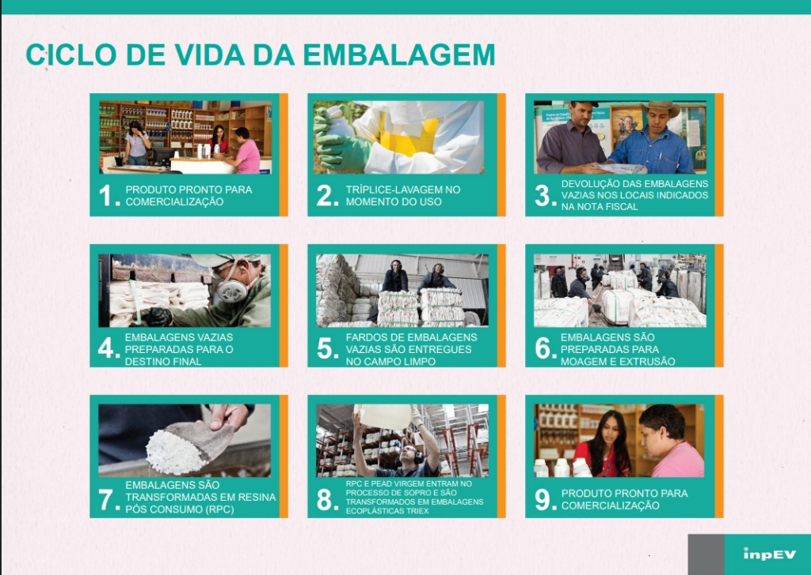

A Trilha do Cultivo Seguro
Aqui estão todos os materiais para você continuar aprendendo sobre hortas e reciclagem segura.

Descarte Responsável e Cultivo Caseiro
Em grandes plantações, o uso de defensivos agrícolas exige um descarte rigoroso das embalagens através do Sistema Campo Limpo, que é um programa que faz a logística reversa dessas embalagens.
Atenção: Para o cultivo de pequenas hortas e cultivo caseiro, é desestimulado o uso de produtos como estes. Manipular defensivos agrícolas exige conhecimento técnico específico e equipamento de proteção. Um erro na dose pode prejudicar a terra, a planta e a saúde da sua família. Para o cultivo caseiro, o ideal são metodologias naturais e orgânicas.

Imagem do ciclo inpEV não encontrada
Usa Defensivo? Faça a Tríplice Lavagem!
Se você precisou usar produto químico (veneno) na horta, a limpeza da embalagem é obrigatória por lei. Siga as etapas de segurança antes de devolver:
Água e Agitação
Coloque apenas 1/4 de água limpa na embalagem, tampe bem e agite com força por 30 segundos.
Bomba Costal
Jogue essa água da lavagem dentro do pulverizador/bomba costal. Repita 3 vezes! Assim você aproveita 100% do produto.
Fure o Fundo
Faça um furo no fundo da embalagem. Isso sinaliza para a família que o galão é perigoso e não pode ser usado para mais nada.
Devolução (Só Defensivos!)
Guarde na caixa original com as tampas originais e devolva no Sistema Campo Limpo. Não misture com frascos de sementes ou remédios.
Controle de Pragas: As 3 Receitas Naturais
Mesmo com a planta forte, pragas como pulgões e cochonilhas podem aparecer. Para combater, temos três soluções diferentes, que nunca devem ser misturadas:
1. Calda de Alho (Uso Pontual)
Amasse 4 dentes de alho grandes com casca em 1 litro de água. Deixe descansar no escuro por 24 horas, coe bem e borrife. Para prevenção, use uma vez por semana. Na infestação, a cada dois dias.
2. Vinagre e Detergente Neutro (Uso Pontual)
Em 1 litro de água, misture 1 colher de sopa de vinagre e 1 colher de sopa de detergente neutro. Borrife no final da tarde. Na infestação, aplique por 3 dias seguidos. Para prevenir, a cada 15 dias.
3. Óleo de Neem (O Cuidado Diário)
O Neem é excelente e de baixa toxicidade para nós e para os pets. Dilua 10 ml em 1 litro de água. Se houver pragas, use uma vez por semana. Para prevenção, a cada 15 ou 20 dias. Atenção: Nunca use todos os dias, pois o óleo cria uma camada que entope os 'poros' da planta, impedindo ela de respirar.
Cuidados Essenciais nas Aplicações
- Horário: Sempre borrife no fim da tarde ou à noite. O sol forte pode agir como uma lupa na gota d'água e queimar a folha, além de destruir os princípios ativos naturais.
- Polinizadores: Evite aplicar quando a planta estiver florida para não afastar ou prejudicar as abelhas.
- Colheita: Se aplicar na sua horta, aguarde de 3 a 7 dias antes de colher. Lave muito bem o alimento para remover qualquer resíduo ou gosto amargo.
- Onde aplicar: O grande segredo não é jogar o produto por cima, mas aplicar principalmente na parte de baixo das folhas, onde os insetos se escondem.
Baixe nosso Material de Apoio
Quer levar essas receitas e dicas com você? Baixe nossa cartilha completa em PDF.
Baixar Cartilha CompletaComo fazer o seu vasinho auto irrigável de garrafa pet em casa!
Corte a Garrafa
Corte a garrafa PET de água/refrigerante ao meio. A base será o reservatório.
Inverta o Topo
Vire a parte do gargalo para baixo e encaixe-a dentro da base.
Fio Condutor
Passe um barbante pelo gargalo, ligando a água até a terra.
Plante e Adube
Coloque terra no topo, plante e misture o adubo orgânico que você ganhou!
O Que Pode Virar Vaso e o Que Descartar?
Proteja sua saúde: saiba o que é seguro reaproveitar na sua horta.
Garrafas de Alimentos
PETs de água, suco ou refrigerante, e caixas de ovos são materiais seguros.
O que fazer:
Faça vasinhos autoirrigáveis e sementeiras sem medo de contaminação!
Óleo, Remédios e Eletrônicos
Guarde o óleo em PETs fechadas. Ele, junto com eletrônicos velhos e medicamentos vencidos, precisa de descarte especial.
Defensivos Agrícolas (Veneno)
Essas embalagens absorvem os produtos químicos e não podem ser reaproveitadas.